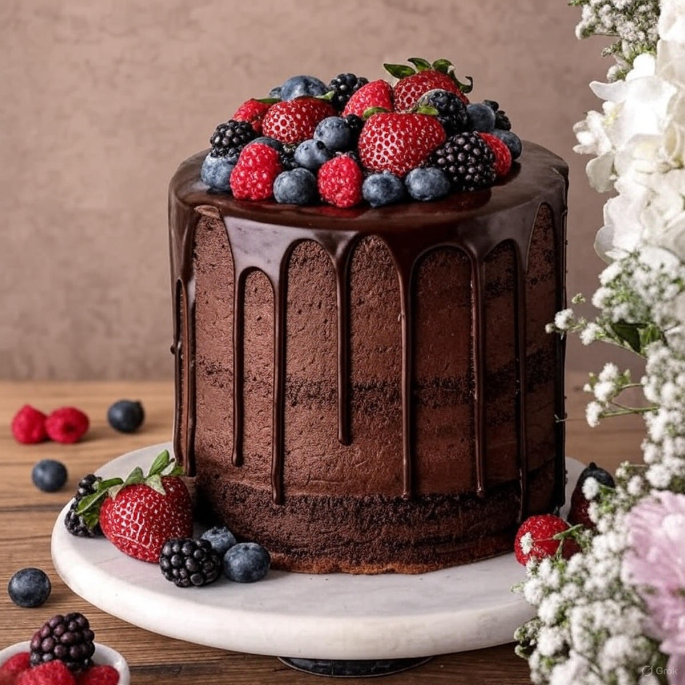

Chocolate Cake

Dry Ingredients
- 1 ¾ cup (220g) All-purpose flour
- ¾ cup (65g) Unsweetened cocoa powder
- 2 cups (400g) Sugar
- 1 ½ tsp Baking powder
- 1 ½ tsp Baking soda
- ½ tsp Salt
Wet Ingredients
- 2 large Eggs
- 1 cup (240ml) Milk
- ½ cup (120ml) Vegetable oil / melted butter
- 2 tsp Vanilla extract
- 1 cup (240ml) Hot water / hot coffee
For Frosting
- 200g Dark chocolate
- 200ml Fresh cream
- 2 tbsp Butter
- (Optional: Powdered sugar for buttercream)
- Dry mix: Combine flour, cocoa, sugar, baking powder, baking soda, and salt.
- Wet mix: Whisk together eggs, milk, oil, and vanilla.
- Combine: Mix the wet and dry ingredients.
- Add liquid: Finally, add hot water/coffee and stir until smooth.
- Bake: Pour into a greased tin and bake at 180°C for 30–35 minutes.
- Cool: Let the cake cool completely.
- Frost: Apply ganache/buttercream and decorate (berries, choco chips, etc.). ✅
- Serve: Slice and enjoy your delicious chocolate cake! 🍰
Preparation Time: 1 Hr 20 minutes | Serves: 10